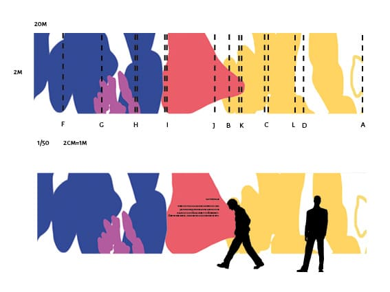
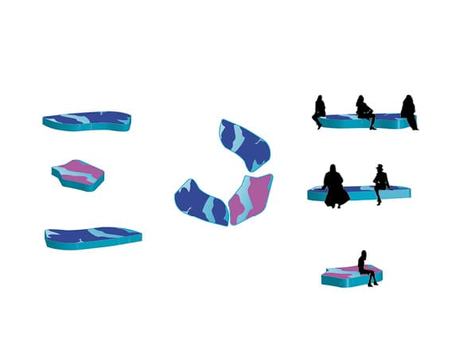
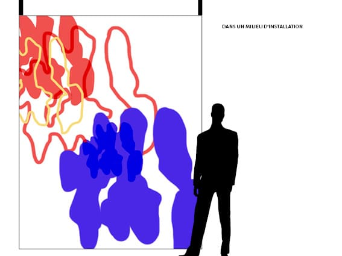
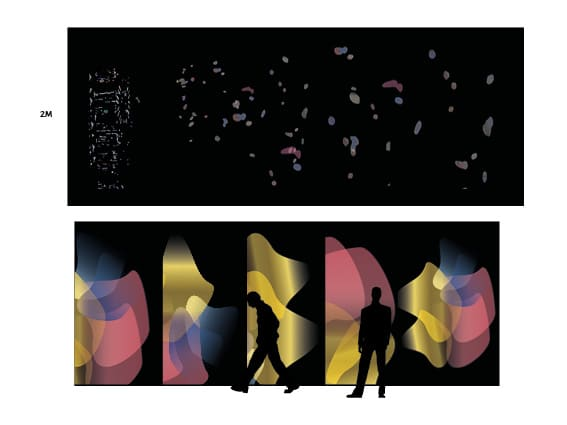
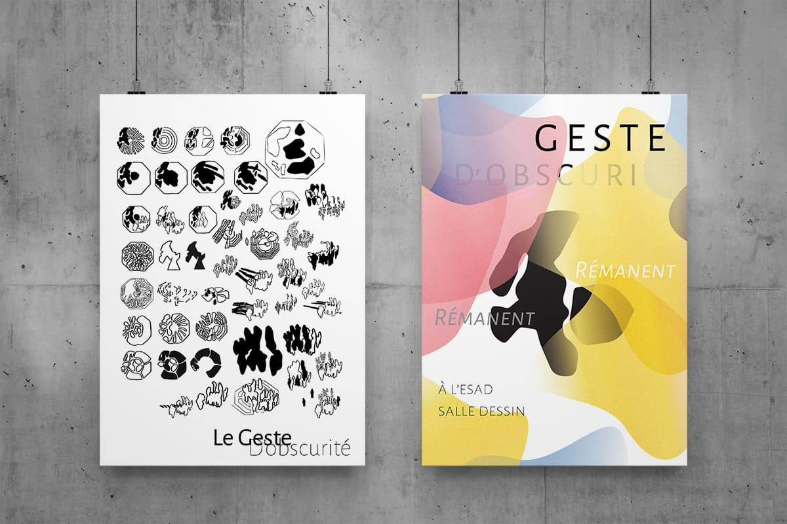

Anayse tous les élément de la cathédrale d'amiens et l'interpréter
graphiquement.
En interprétant graphiquement divers éléments de la
cathédrale,
j'ai fait un certain nombre des signes et sélectionné quelques formes
parmi elles.
aprés j'ai procédé au travail d'installation.